Warranty and Copyright
Warranty
All Berkeley Nucleonics (BNC) instruments are warranted against defects in material and workmanship for a period of two years from the date of shipment. Berkeley Nucleonics will, at its option, repair or replace products that prove to be defective during the warranty period, provided they are returned to Berkeley Nucleonics and provided the preventative maintenance procedures are followed. Repairs necessitated by misuse of the product are not covered by this warranty. No other warranties are expressed or implied, including but not limited to implied warranties of merchantability and fitness for a particular purpose. Berkeley Nucleonics is not liable for consequential damages. The warranty on the internal rechargeable batteries (option B3) is one year from the date of shipment. Battery replacement is available through Berkeley Nucleonics and its distributors.
Copyright
This manual is copyright by Berkeley Nucleonics and all rights are reserved. No portion of this document may be reproduced, copied, transmitted, transcribed, stored in a retrieval system, or translated in any form or by any means such as electronic, mechanical, magnetic, optical, chemical, manual or otherwise, without written permission of Berkeley Nucleonics.
1.General Remarks
The devices described in this manual are signal generators that produce electromagnetic signals from 9 kHz up to 40 GHz with a power from -90 dBm up to +25 dBm. The exact range depends on the chosen device model and options. The devices can produce different types of modulations, such as AM, FM, PM, Pulse or Chirp.
They can be used in a variety of applications such as research and development or manufacturing and testing of electronic components.
Options, such as a 1U case, an internal rechargeable battery, a GPIB interface or different types of power range extensions can be added.
Validity of this Manual
This manual is valid for the following devices and their extended versions:
- 825-M, 845-M, 865B-M
- 845-M-X, 865B-M-X
- 855B-6-X, 12-X, 20-X, 33-X, 40-X
- 835-4/6
- 845-12/20/26
- 865B-6/12/20/26/40
- 871
- 805-M
2.Available Casing
The devices are available in the following cases.
Compact Portable Case (CPC)
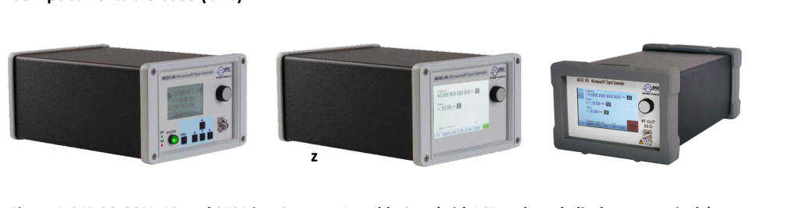
1U Case
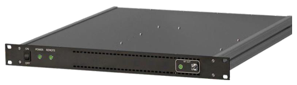
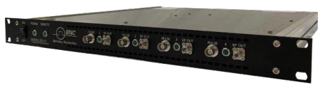
Desktop Chassis
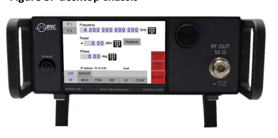
Module
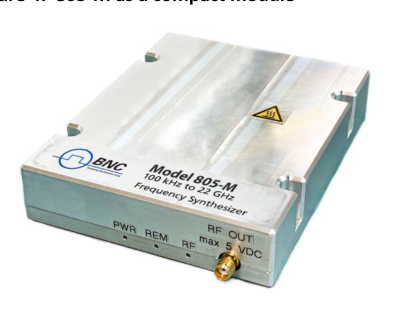
3.Connections and Transportation
Data Connections
The devices may only be connected to a network or a computer by using a shielded LAN cable. Unless shorter lengths are prescribed, a maximum length of 3 m must not be exceeded for the LAN and the USB connection.
Signal Connections
In general, all connections between the signal generator and another device should be made as short as possible and must be well shielded. It is recommended to use a high-quality cable with low loss especially for frequencies above 20 GHz.
Transportation
The devices must only be transported with the packaging supplied by the manufacturer. The device can be lifted up or transported in any orientation.
4.Safety Information
The following pieces of information are important to prevent personal injury, loss of life or damage to the equipment. Please read them carefully. If the device is used in a manner not specified by this manual, the protection provided by the device may be impaired.
Signal Symbol
In this manual, the following symbols are used to warn the reader about risks and dangers.
Labels on Products
The following labels are on the products. Familiarize yourself with the meaning of each of the labels before using the product.
| Label | Meaning |
|---|---|
| DC | Direct Current |
| AC | Alternating Current |
| Earth | Earth (Ground) |
| WEEE | EU label for separate collection of electrical and electronic waste. |
| Caution | Caution, general danger zone. Attend the manual and/or a notice on the device. |
General Safety Considerations
FCC Notice
This equipment has been tested and found to comply with the limits for a Class A device, pursuant to Part 15 of the FCC Rules. These limits are designed to provide reasonable protection against harmful interference when the equipment is operated in a commercial environment. This equipment generates, uses, and can radiate radio frequency energy and, if not installed and used in accordance with the instruction manual, may cause harmful interference to radio communications.
Operation of this equipment in a residential area may cause harmful interference in which case the user will be required to correct the interference at his or her expense.
CE Notice
The instrument meets the EMC directive and the Low Voltage Directive described in the CE declaration in Appendix A.
5.Technical Specifications
Dimensions
CPC
Dimensions of the compact portable case:
| A | 262 mm (835/845), 292 mm (865B) |
| B | 174 mm |
| C | 116 mm |
| Weight | < 2.5 kg |
1U
Dimensions of the 1U case:
| A | 483 mm |
| B | 44 mm |
| C | 480 mm |
| Weight | < 7.0 kg |
Connectors
CPC
The front panel contains a status display (only in CPC), RF output female N-type connector (835), a female SMA connector (845, 865B-6/12/20/26/40, 855B, 845-M, 865B-M), or a K connector (865B-40) and an RF on/off key. The LCD screen shows information on the current function. Information includes status indicators, frequency and amplitude settings, current connectivity status, and error messages. Five control buttons allow easy menu control.
Front Panel
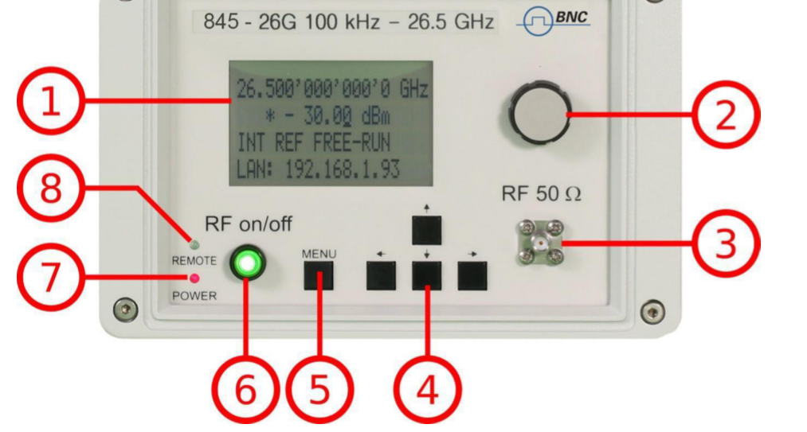
- Main LCD display. The main display shows the following information. 1st line: RF frequency in Hz. 2nd line: RF amplitude in dBm. 3rd line: Frequency reference status (internal, external, lock status). 4th line: Remote control status.
- Rotary Button. The rotary button is used to change the value selected on the screen.
- RF 50 Ω connector. This female N-type respectively SMA connector provides the output for generator signals. The impedance is 50 ohm. The reverse power damage level is +30 dBm maximum. The maximum allowed DC level is +/- 10 V. Please check the data sheets for more details.
- Menu Buttons. The menu buttons are used to change the selected menu point or value.
- Main Menu Button. The main menu button is used to enter the menu.
- RF On/Off button. The ON/OFF key toggles between RF output on and RF output off. The green light indicates whether the RF output is enabled (light on) or disabled (light off).
- Power LED. The power LED indicates whether the device is on or off.
- Remote LED. The remote LED indicates whether the device is connected to a computer or not.
Rear Panel
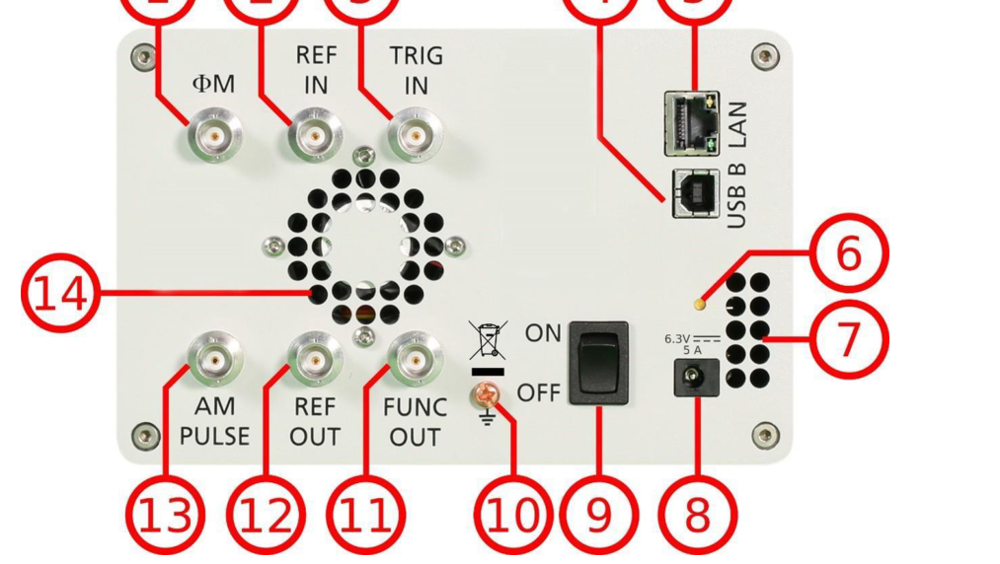
- ΦM. This BNC female connector is the input for FM and PM.
- REF IN. This BNC female connector is the input for the reference signal.
- TRIG IN. This BNC female connector is the trigger input.
- USB B. The USB B connector is used to connect the device to a computer.
- LAN. The LAN connector is used to connect the device to a network.
- Battery LED. In case the device has a rechargeable battery, this LED indicates whether the battery is charged or not.
- Fan Holes. The holes by which the air is taken in.
- Power Supply. Apply the BNC power adaptor to this connector to supply the device with energy.
- ON/OFF Switch. Turns the device on or off.
- Ground Screw.
- FUNC OUT. This BNC female connector is the output for the function signal.
- REF OUT. This BNC female connector is the output for the reference signal.
- AM PULSE. This BNC female connector is the input for the AM and the PULSE modulation signal.
- Fan Holes. The holes by which the air is extruded.
1U — 845
Front panel
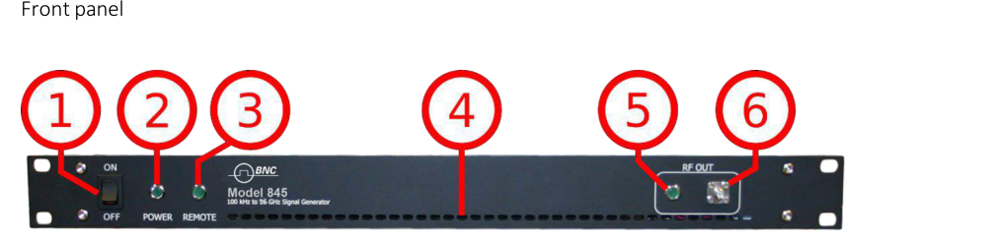
- ON/OFF Switch. Turns the device on or off.
- Power LED. Indicates whether the device is on or off.
- Remote LED. Indicates whether the device is connected to a computer or not.
- Fan Holes. The holes by which the air is taken in.
- RF LED. This LED indicates whether the RF signal is on or off.
- RF 50 Ω connector. This female N-type respectively SMA connector provides the output for generator signals. The impedance is 50 ohm. The reverse power damage level is +30 dBm maximum. The maximum allowed DC level is +/- 10 V. Please check the data sheets for more details.
Rear panel
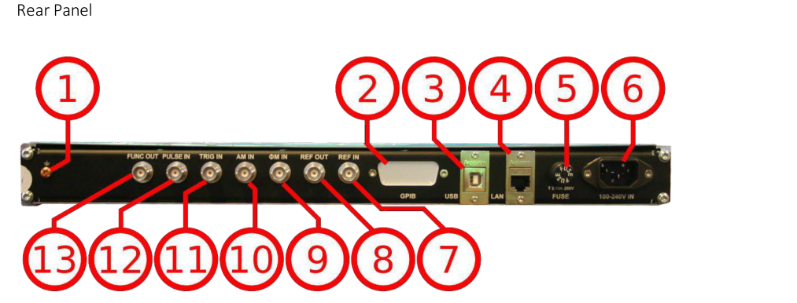
- Ground Screw.
- GPIB Connector. In case the device has the option GPIB, on this position is the GPIB connector.
- USB B. The USB B connector is used to connect the device to a computer.
- LAN. The LAN connector is used to connect the device to a network.
- FUSE Holder. This holder contains an exchangeable fuse.
- Power Supply. Apply the voltage, specified below, to supply the device with energy.
- REF IN. This BNC female connector is the input for the reference signal.
- REF OUT. This BNC female connector is the output for the reference signal.
- ΦM. This BNC female connector is the input for FM and PM.
- AM IN. This BNC female connector is the input for the AM signal.
- TRIG IN. This BNC female connector is the trigger input.
- PULSE. This BNC female connector is the input for the PULSE modulation signal.
- FUNC OUT. This BNC female connector is the output for the function signal.
1U — 855B / 865B-M-40-X
Front panel
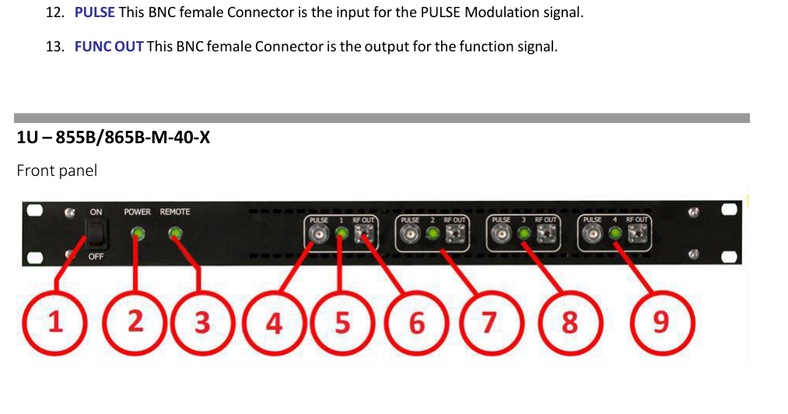
- ON/OFF Switch. Turns the device on or off.
- Power LED. Indicates whether the device is on or off.
- Remote LED. Indicates whether the device is connected to a computer or not.
- Channel 1: PULSE. This BNC female connector is the input for the PULSE modulation signal.
- Channel 1: RF LED. This LED indicates whether the RF signal is on or off.
- Channel 1: RF 50 Ω connector. This female K-type respectively SMA connector provides the output for generator signals. The impedance is 50 ohm. The reverse power damage level is +30 dBm maximum. The maximum allowed DC level is +/- 10 V. Please check the data sheets for more details.
- Channel 2.
- Channel 3.
- Channel 4.
Rear panel
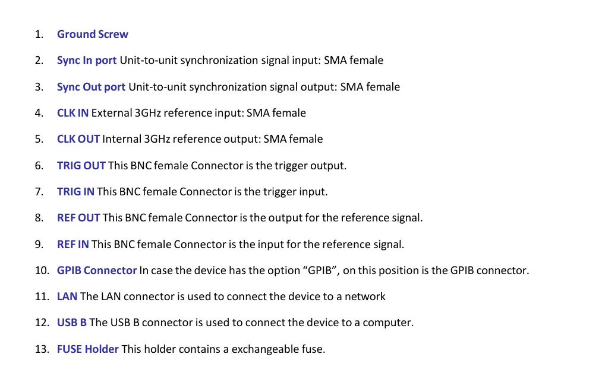
- Ground Screw.
- Sync In port. Unit-to-unit synchronization signal input: SMA female.
- Sync Out port. Unit-to-unit synchronization signal output: SMA female.
- CLK IN. External 3 GHz reference input: SMA female.
- CLK OUT. Internal 3 GHz reference output: SMA female.
- TRIG OUT. This BNC female connector is the trigger output.
- TRIG IN. This BNC female connector is the trigger input.
- REF OUT. This BNC female connector is the output for the reference signal.
- REF IN. This BNC female connector is the input for the reference signal.
- GPIB Connector. In case the device has the option GPIB, on this position is the GPIB connector.
- LAN. The LAN connector is used to connect the device to a network.
- USB B. The USB B connector is used to connect the device to a computer.
- FUSE Holder. This holder contains an exchangeable fuse.
- Power Supply. Apply the voltage, specified below, to supply the device with energy.
CPC with Touch Display
The front panel contains a touch display, RF output female SMA connector (845, 865B-6/12/20/26, 855B, 845-M, 865B-M), or a K connector (865B-40G). The touch display shows information on the current function. Information includes status indicators, frequency and amplitude settings, current connectivity status, and error messages.
Front panel
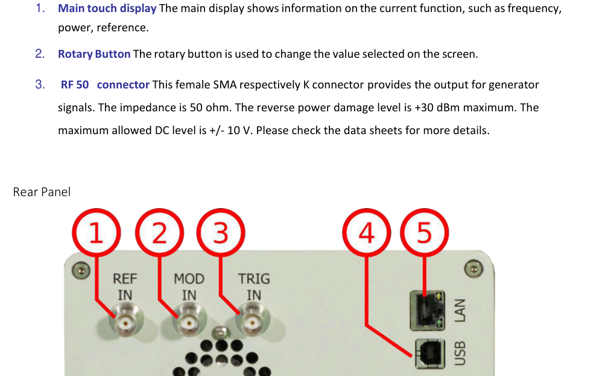
- Main touch display. The main display shows information on the current function, such as frequency, power, reference.
- Rotary Button. The rotary button is used to change the value selected on the screen.
- RF 50 Ω connector. This female SMA respectively K connector provides the output for generator signals. The impedance is 50 ohm. The reverse power damage level is +30 dBm maximum. The maximum allowed DC level is +/- 10 V. Please check the data sheets for more details.
Rear panel
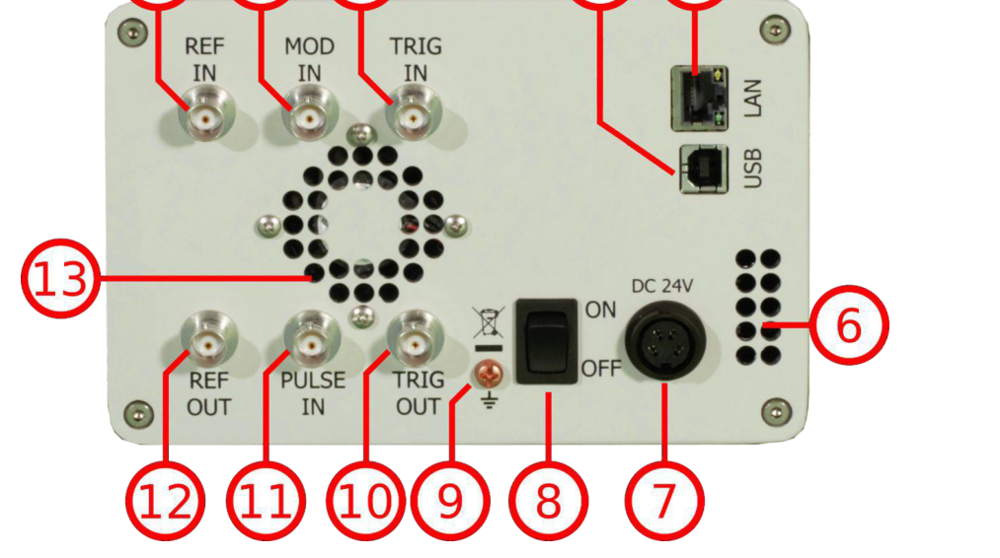
- REF IN. This BNC female connector is the input for the reference signal.
- MOD IN. This BNC female connector is the input for the modulation signal.
- TRIG IN. This BNC female connector is the trigger input.
- USB B. The USB B connector is used to connect the device to a computer.
- LAN. The LAN connector is used to connect the device to a network.
- Fan Holes. The holes by which the air is taken in.
- Power Supply. Apply the BNC power adaptor to this connector to supply the device with energy.
- ON/OFF Switch. Turns the device on or off.
- Ground Screw.
- TRIG OUT. This BNC female connector is a multi-function output.
- PULSE IN. This BNC female connector is the input for the pulse signal.
- REF OUT. This BNC female connector is the output for the reference signal.
- Fan Holes. The holes by which the air is extruded.
6.Operating Conditions and Environment
Minimum Distances
For adequate cooling, the minimum distances between the device and another object, such as walls, rack cabinet walls or other equipment must be respected. The minimum distances are:
| Case | Minimum distances |
|---|---|
| CPC | A: 150 mm |
| 1U | A: 1 mm, B: 1 mm, C: 50 mm, D: 50 mm |
Energizing and De-energizing
To energize the device, apply the specified voltage to the corresponding connector.
| Case | Voltage | Frequency | Max. current |
|---|---|---|---|
| CPC | 6.3 V DC | — | 5 A |
| 1U | 100 V – 240 V AC | 50 Hz – 60 Hz | 3 A |
The 1U case has a fuse, accessible from the outside. To change the fuse, pull out the mains plug, push the fuse holder into the back panel and turn it around 45°, then take the holder out. Replace the old fuse with a new one.
| Size | 5 x 20 mm |
| Voltage | 250 V ~ |
| Current rating | 3.15 A |
| Characteristic | Time-Lag T |
| Breaking capacity | 35 A – 200 A |
Use the supplied power adapter from BNC to supply the CPC. Apply only a voltage with the values specified below. The power adaptor for the CPC has the following specifications:
| Input | 100-240 V~, 50-60 Hz, 1.5 A |
| Output | 6.3 V DC, 5.71 A, 36 W |
| Efficiency Level | VI |
To de-energize the device, pull out the power cable.
Proper Operation Conditions
The devices are designed for use in dry and clean environments. The CPC can also be used in the field as long as the operating conditions are met. Operation in an environment with high dust content, high humidity, danger of explosion or chemical vapors is prohibited.
| Operating temperature range | 0°C to +45°C |
| Storage and transportation temperature range | -40°C to +70°C |
| Operating and storage altitude | 4600 m |
In case of condensation, 2 hours are to be allowed for drying prior to operation. Operation is only allowed from a 3-terminal mains connector with a safety ground connection and a mains plug used in your specific country. For sufficient ventilation, ensure open ventilation holes.
Environmental Information
- Waste electrical and electronic equipment must not be disposed of with unsorted municipal waste, but must be collected separately. Contact the BNC customer service center for environmentally responsible disposal of the product.
- Specially marked equipment has a battery or accumulator that must not be disposed of with unsorted municipal waste, but must be collected separately. It may only be disposed of at a suitable collection point or via a BNC service center.
7.Introduction
This instruction manual is valid for BNC model series 835, 845, 865B, 855B, 845-M, and 865B-M. Chapter 8 gives guidance for a quick and easy setup of your new instrument. Chapter 9 describes remote operation via the BNC graphical user interface (GUI). Chapter 10 describes control via the front panel and applies only to 835/845 models.
Included Material
Your signal generator kit contains the following items:
- Signal Generator
- Universal power adaptor (AC 100 – 240 V) with corresponding country-specific plugs
- Ethernet Cable
- Manuals and software CD
General Features and Functions (Model Overview)
BNC RF and microwave signal generator model overview:
| Models | Range | Power range | Options | Display |
|---|---|---|---|---|
| 835 | 9 kHz – 2, 4, 6 GHz | -30 to +15 dBm | B3, PE3, GPIB, RM, 1U, REAR, AVIO | Y |
| 845 | 100 kHz – 12, 20, 26 GHz | -20 to +15 dBm | 9K, B3, PE3, GPIB, RM, 1U, FS, HP, TP, LH, REAR, NM | Y |
| 865B | 100 kHz – 6, 12.75, 20, 26, 40 GHz | -20 to +25 dBm | PE3, PE4, GPIB, RM, LH, 1U, FS, LN, MOD, EB, REAR | Y |
| 855B | 300 kHz – 6, 12, 20, 26, 33, 40 GHz | -20 to +25 dBm | FS, GPIB, LN, MOD, PE4, PHS, VREF | N |
| 845-M | 0.01 GHz – 20.0 GHz | +23 dBm | FS, LN | N |
| 865B-M | 0.01 GHz – 40.0 GHz | -10 to +25 dBm | FS, LN, VREF | N |
| 865B-M-40-X | 0.01 GHz – 40.0 GHz | -10 to +25 dBm | FS, LN, VREF | N |
| 805-M | 100 kHz – 22.0 GHz | -40 to +25 dBm | FS | N |
General features include:
- Extendable power range (option PE3, PE4)
- Modulation capabilities for FM, PM, AM and PULM modulation (model dependent)
- Fast frequency, power and list sweeps
- Light weight, optional internal rechargeable batteries (options B3, EBAT)
- 3-inch status LCD (835/845 models only)
- Long-term support: software upgrades (firmware, API, GUI) are available to download from www.berkeleynucleonics.com. You can also call our technical specialists for support. You can continue to use both of these services free of charge for the lifetime of the product.
- Universal LAN VXI-11 and USB 2.0 device and host interface
- 18-24 months calibration cycle
Options
| Option | Description |
|---|---|
| B3 | Internal rechargeable battery |
| FS | Fast switching |
| LN | Enhanced close-in phase noise |
| MOD | Analogue modulation |
| PE3 | Mechanical step attenuator for extended power range (835: 90 dB; 845: 75 dB) |
| PE4 | Electrical step attenuator for extended power range (865B, 855B: 80 dB) |
| GPIB | GPIB interface added |
| AVIO | Specific avionics modulation capabilities added (Model 835) |
| 1U | 19'' 1HE enclosure. No display, remote control only |
| RM | 19'' 3HU rack-mount kit |
| REAR | Move output to the rear |
| 9K | Frequency range extension to 9 kHz |
| HP | High output power |
| TP | Color touch-screen front panel |
| LH | Desktop housing with color touch-screen front panel |
| NM | Remove modulation function |
| EB | External power bank |
| PHS | Phase coherent switching |
| VREF | Variable external reference |
8.Getting Started
System Requirements
The BNC graphical user interface requires at least the minimum system requirements to run one of the supported operating systems.
| Operating system | Windows 2000 SP4, XP SP2, Vista, 7, 8, 10 |
| Remote | 10/100/1000M Ethernet or USB 2.0 Port |
Unpacking the Instrument
Remove the instrument materials from the shipping containers. Save the containers for future use. For a list of material included in the standard package, please refer to the Included Material section above.
Initial Inspection
Inspect the shipping container for damage. If the container is damaged, retain it until the contents of the shipment have been verified against the packing list and instruments have been inspected for mechanical and electrical operation.
Starting the Instrument
This section describes installation instructions and verification tests.
Applying Power
Place the instrument on the intended workbench and connect the appropriate DC power supply to the receptacle on the rear of the unit. Make sure you use the included DC power supply.
Press the line on/off switch on the rear panel. If available, the front panel display will illuminate. The instrument will initialize and momentarily display the model number, firmware revision and product serial number. The display will then switch to the factory default display setting, showing preset frequency (100 MHz) and power (0.0 dBm), phase lock status (of internal reference) and instrument connectivity status (Ethernet IP or USB identifier).
Connecting to LAN
Connect the instrument to your local area network (LAN) using the Ethernet cable. By default, the instrument is configured to accept its dynamic IP number from the DHCP server of your network. If it is configured properly, your network router will assign a dynamic IP number to the instrument which will be automatically displayed on the screen. Your instrument is now ready to receive remote commands.
Direct Connectivity to Host via Ethernet Cable (no router)
You can connect the instrument to your computer with the Ethernet cable without using a local area network with DHCP server. To work properly, the network controller (NIC) of your computer must be set to an IP address following the ZEROCONF standard, beginning with 169.254.xxx.xxx (excluding 169.254.1.0 and 169.254.254.255) and network mask 255.255.0.0 to match the ZEROCONF IP that the signal generator will assign itself after DHCP timeout. Any fixed address in the abovementioned range is admissible as well. The generator's ZEROCONF address cannot be predicted as it is assigned dynamically, however the ZEROCONF address assignment process ensures it will not conflict with any other address used in the network.
Connection from a NIC that is configured to use DHCP is also possible. After a pre-set timeout, the NIC will assume that no DHCP is available and self-assign a fallback IP that will fall into the range 169.254.xxx.xxx. Alternatively, you may assign the instrument a fixed IP.
Connecting through USB
Connect the (powered on) instrument to the computer using a quality USB type-A to type-B cable. If properly connected, the computer host should automatically recognize your instrument as a USBTMC device.
Note: if you want to work with the BNC GUI, it must be installed with USB support selected. Then the GUI will detect all attached devices automatically. Open the GUI and follow the instructions in the GUI chapter. Alternatively, a VISA runtime environment (NI, Keysight or comparable) must be installed. Use VISA Write to send the *IDN? query and use VISA Read to get the response. The USBTMC protocol supports service request, triggers and other GPIB-specific operations.
Connecting through GPIB
Connect the instrument to the GPIB controller using the rear panel GPIB connector (option GPIB is required). Once connected properly, use VISA Write to send the *IDN? query and use VISA Read to get the response. The protocol supports service request, triggers and other GPIB-specific operations.
Installing the 835/845 Remote Client
BNC's graphical user interface provides intuitive control of the instruments. It runs under the Windows operating system with minimum requirements. The DLL is embedded in the GUI application and requires the Microsoft .NET framework to be installed. To install the GUI on the computer, insert the BNC Software and Manual CD into the CD/DVD drive. If the setup doesn't start automatically, double click on setup.exe to run the auto-installer.
The self-extracting setup provides easy installation and de-installation of the software. The setup program guides you in a few steps through the installation process. In case the .NET framework is not installed on your current Windows operating system, the setup procedure will assist you automatically to install the required version. For this you will need an active internet connection.
Troubleshooting the LAN Interconnection
Software does not install properly
- Make sure your installation CD is not damaged.
- When Microsoft .NET Framework is not installed, make sure that your computer is connected to the internet during installation of the BNC Software. If no internet connection is available, install the .NET Framework that is available on the installation CD.
Software cannot detect any instrument
- Make sure you have connected both computer and instrument to a common network.
- If a direct connection is used, you may need to reset your computer Ethernet controller (depending on the configuration). Note that in that case detection of the instrument can take a considerable amount of time if your computer is configured to work with an external DHCP server. In some cases the detection may even fail completely. Configure your computer network controller to an appropriate fixed IP instead.
- Make sure that your software firewall enables the GUI to set up a TCP/IP connection via the LAN. Under Windows 7/10: open Control Panel under Settings in your Start menu, then go to Windows Firewall, click on Exceptions and then Add Program. If the GUI is in this list, choose it and click OK, otherwise browse for the path to the GUI installation directory. Finally close all open dialogs with OK.
Shutting Down the Signal Generator
Press the line on/off switch on the rear panel to off.
9.Using the Graphical User Interface (GUI)
BNC's graphical user interface provides intuitive control of the signal generator. It runs under any Windows operating system. Make sure the software is installed correctly and the computer's firewall is configured properly. The GUI's dynamic link library (DLL) uses the Microsoft .NET framework.
Start the Signal Generator (SG) GUI
After successful installation of the software, double-click the software shortcut that has been created on your desktop. After start, the GUI will automatically detect existing BNC instruments that are connected to the computer (network) via local area network, USB, or GPIB. In the CONTROL tab the detected instruments are listed. Clicking on one of the devices will instantly establish connection. Clicking on an alternate device will disconnect the old device and reconnect to the new device. The Scan Instruments button will enable automated scanning for new instruments. The Disconnect/Connect button will establish and terminate connection.
General Look
- The CONTROL tab completes the following functions: scan and establish connection to instrument; configure remote interface (LAN, USB, GPIB); save, load and manage instrument memory states.
- CW tab
- SWEEP tab
- MODULATION tab
- REFERENCE tab
- TRIGGER tab
- LF OUT tab
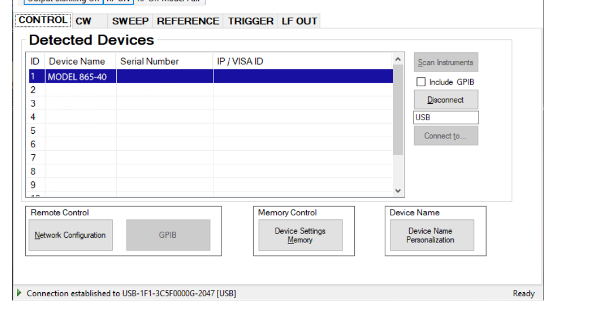
Simultaneously Controlling Multiple Signal Generators from one PC
You can easily control multiple BNC instruments from a single computer but you need to start a separate GUI for every instrument, as only one instrument is controlled by the GUI at once.
Store and Load Instrument States
Multiple memory states are available to store instant instrument settings. By clicking on the Device Settings Memory button the currently saved memory settings are displayed and can be loaded or overwritten. To modify or enter a state, click on the appropriate line and select whether the current instrument settings shall be stored in or loaded from the selected memory state.
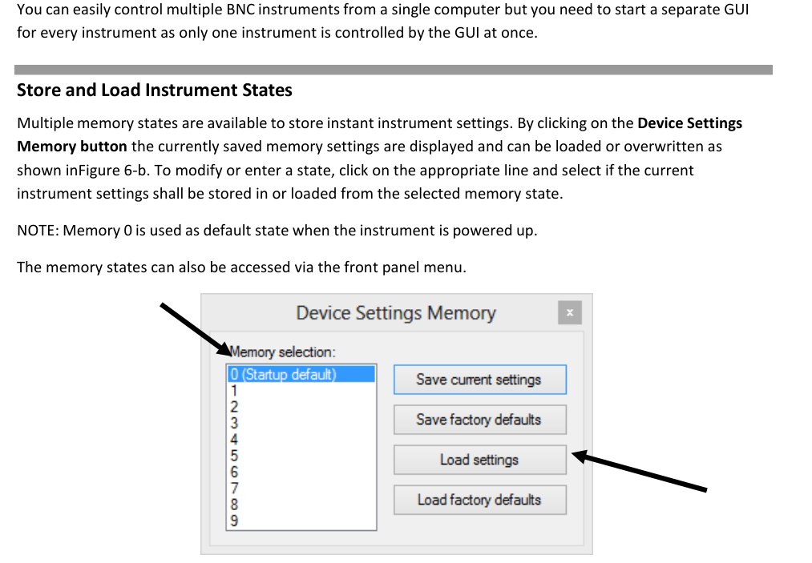
Setting Network Configuration
The Network Configuration button allows configuring the LAN settings. You may choose from three distinct network addressing modes: setting to Auto will check for a DHCP server on the network but if this fails, will fall back to assigning an address automatically using zeroconf. Setting to DHCP will check for a DHCP server on the network with no fallback option if one doesn't exist. Setting to manual will require the user to supply all network settings for the device manually below. Additionally, the device name can be modified as desired. The unit serial number and firmware revision are displayed at the bottom of the dialog box.
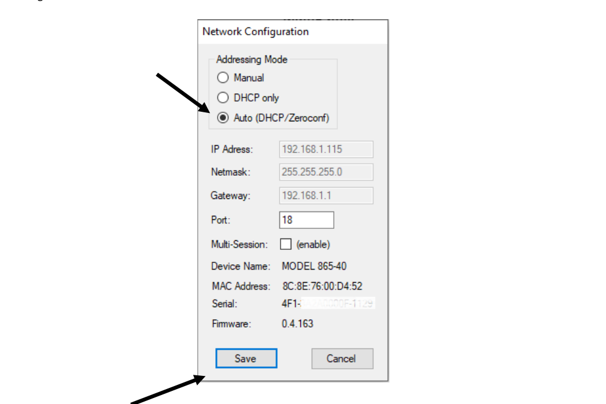
Multi-Session Option
The Multi-Session checkbox can be selected to enable the device to be accessed from more than one instance of the UI. This enables users on multiple computers on the network to connect to and configure the device simultaneously. It is the user's responsibility to manage access conflicts whilst this mode is enabled (i.e. 2 users changing the same option from different PCs).
Device Port Setting
The Port option allows the listening TCP port to be customized for the device. The default setting for all devices is port 18. If changed, the device will no longer be accessible using this port number. Any instances of the UI (or other VISA applications connecting to the device over a network) will need to modify their destination port number to match the device to connect to.
Connecting to Devices using a Non-Default Port
There are two options for connecting to a device when its default listening port has been changed.
- Specify a temporary connection port. Click the menu Info -> Connection Settings -> Specify Connection Port. This will cause a new setting Custom Port to be displayed on the Control tab of the UI. The connection port to use can then be entered (within the range of permissible TCP port numbers). Beware that this setting will overwrite the default port until it is removed. To remove, select Specify Connection Port again; this will remove the Custom Port setting from the UI and revert to using the current default port. Deleting the port number from the Custom Port text box will also cause the UI to revert to using the default port.
- Change the application's default port setting. The global default port to use for connections can be changed by selecting menu Info -> Connection Settings -> Change Default Port. A default port can be entered into the dialog box which appears and set by clicking button Set Default; only permissible TCP ports can be entered here. If the new default port is accepted, the [Default=] text above will display the new setting. Beware that the new default setting will now persist until changed again, including after restarting the UI or rebooting your system.
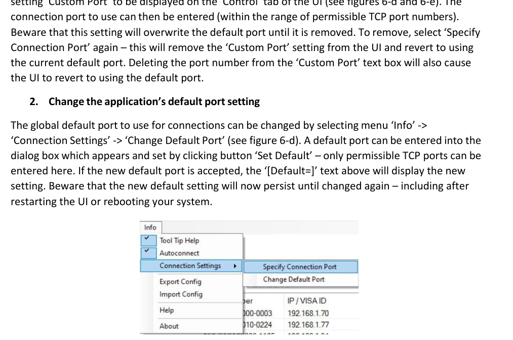
Setting the GPIB Address
If the instrument has the GPIB option installed, the GPIB address can be changed in the GPIB submenu in the control tab. Valid GPIB addresses range from 1 to 30. To verify GPIB functionality, use the VISA Assistant available with the Agilent IO Library or the Getting Started Wizard available with the National Instruments IO Library. These utility programs enable you to communicate with the signal generator and verify its operation over GPIB. For information and instructions on running these programs refer to the Help menu available in each utility.
Perform Firmware Upgrade
A firmware upgrade of the instrument can be done directly via the GUI. First make sure you are connected to the right instrument and have the correct firmware binary file (.tar) ready. Then apply Controller → Update Firmware and select the appropriate binary file that you have received from BNC or downloaded from the BNC website. The update will take a few seconds and after completion your instrument will reboot. Reconnect to the instrument after booting is completed and continue with the updated firmware.
Multi-Output GUI Control
Individual outputs of the BNC multi-channel signal sources (such as 855B or 865B-M-40-X) can be controlled by the GUI by selecting the corresponding channel above the control tab menu. Each channel can be configured fully independently as if it were an individual signal generator. Note that the Select Channel control appears only when connected to a multi-channel device.
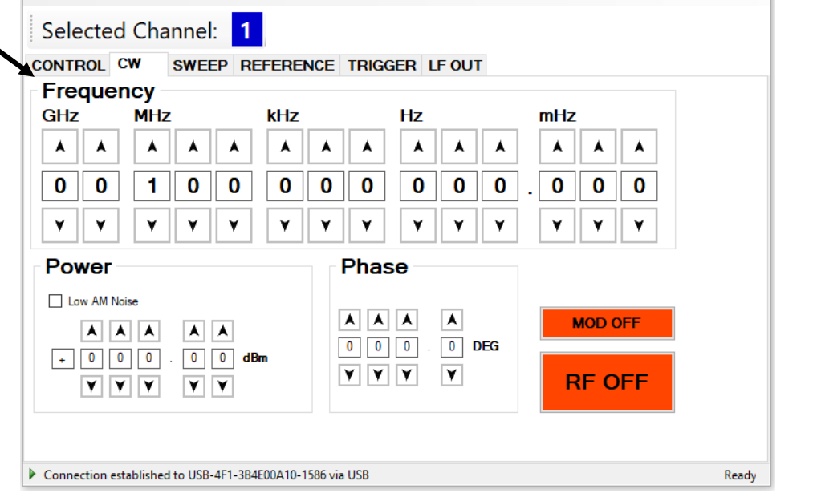
Combined Modulation
The tables below show what modulation types and sweeps can be active simultaneously. Some modulations can be combined with frequency and power sweeps. For those combinations, some timing restrictions apply; check the programmer's manual for further details. Some combinations may be available only using the GUI or custom remote programming sequences, but not on the front panel.
| FM/PM INT/EXT | AM INT/EXT | PULSE INT/EXT | LF Generator | |
|---|---|---|---|---|
| FM/PM Internal / External | LIMITED [1] / LIMITED [1] | YES / YES | YES / YES | YES / YES |
| AM Internal / External | NO / NO | NO / NO | NO | YES |
| PULSE Internal / External | YES | YES | — | LF Generator |
| CHIRP | NO / NO | LIMITED [2] | LIMITED [3] | YES |
Table 6-e. Possible combinations of internal and external modulation and the internal LF generator output. Remarks: [1] Combining AM and FM/PM is available to 835/845 only. [2] Enable AM first since active chirp disables live update of other settings. [3] In ALC on mode.
| FM/PM INT/EXT | AM INT/EXT | PULSE INT/EXT | |
|---|---|---|---|
| Frequency sweep | LIMITED [1,2] | LIMITED [1,2] | LIMITED [2,3] |
| Power sweep | LIMITED [1,2] | LIMITED [1,2] | LIMITED [2,3] |
| List sweep | LIMITED [1,2] | LIMITED [1,2] | LIMITED [2,3] |
Table 6-f. Possible combinations of internal and external modulation and sweeps. Remarks: [1] AM, FM, PM modulated carrier sweep is available to 835/845 only. [2] Enable modulation first since active sweep disables live update of other settings. [3] In ALC on mode.
10.Local Operation via Front Panel
Most of the signal generator models offer direct front panel control. A rotary knob and five keys (MENU, and four arrow keys) allow full control over the instrument.
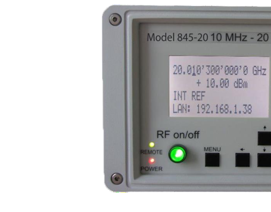
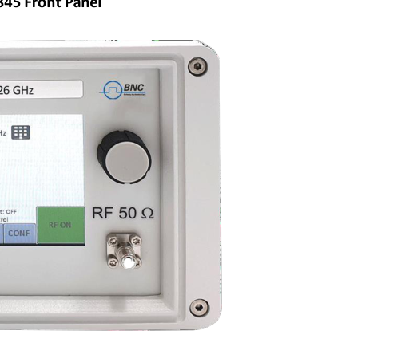
For both front panels: the RF 50 Ω female N-type connector provides the output for RF signals. The impedance is 50 ohm. The damage level is +30 dBm maximum. The maximum allowed DC level is +/- 10 V. The rotary knob is used to switch between menus and to continuously change values at the cursor position.
Only for 835/845 front panels:
- RF On/Off button. The ON/OFF key toggles between RF output on and RF output off. The green light indicates whether the RF output is enabled (light on) or not.
- Menu Key. This is a multifunction key. The key is used to enter and exit menus. Press once to return to the CW menu, press multiple times to toggle between the currently selected submenu and the CW menu. The submenus can always be exited by pressing the menu key.
- Arrow keys. These keys are used to move the cursor within the screen menus. Within menus, the right/left keys are also used to enter and exit the next menu hierarchy; the up/down arrows are used to navigate between menu pages when several are available.
- LAN LED. Illuminates as soon as a remote connection is active.
- Power LED. Illuminates when the system is powered up.
The currently active display position is shown by the cursor (underline symbol, or different background colour). The cursor does not move beyond the field of the currently selected parameter. Rotate the front panel knob to modify the value. Clockwise rotation increases the parameter and counter-clockwise rotation decreases the parameter. The parameter value will continue to increase or decrease by the amount of the selected resolution until it reaches the maximum or minimum limit of the parameter.
Displayed Parameter Formats
The following sections describe how to control the instrument via the front panel by invoking various menu functions.
CW Display
The Main or CW Display is shown after the instrument has successfully booted and is ready. The four-line display has the following format: Output Frequency, Output Power, Reference Frequency, Remote Control.
Main Menu Display
The Main Menu Display is invoked by pressing the menu key. The main menu contains nine submenus: 1. Sweep, 2. Modulation, 3. Reference, 4. Trigger, 5. LF Output, 6. LAN Config, 7. Display Settings, 8. Device Settings, 9. Help.
Frequency Sweep Submenu
After accessing the Frequency Sweep menu, the first of three displays allows you to enter the start and stop frequency. On the second display the number of points and the on and off time can be entered. On the third screen, select the sweep mode between LINear, LOGarithmic and RANDom. Also select the repetition mode between INFinite and 1 (single repetition). Start the sweep by pressing the RF On/Off button.
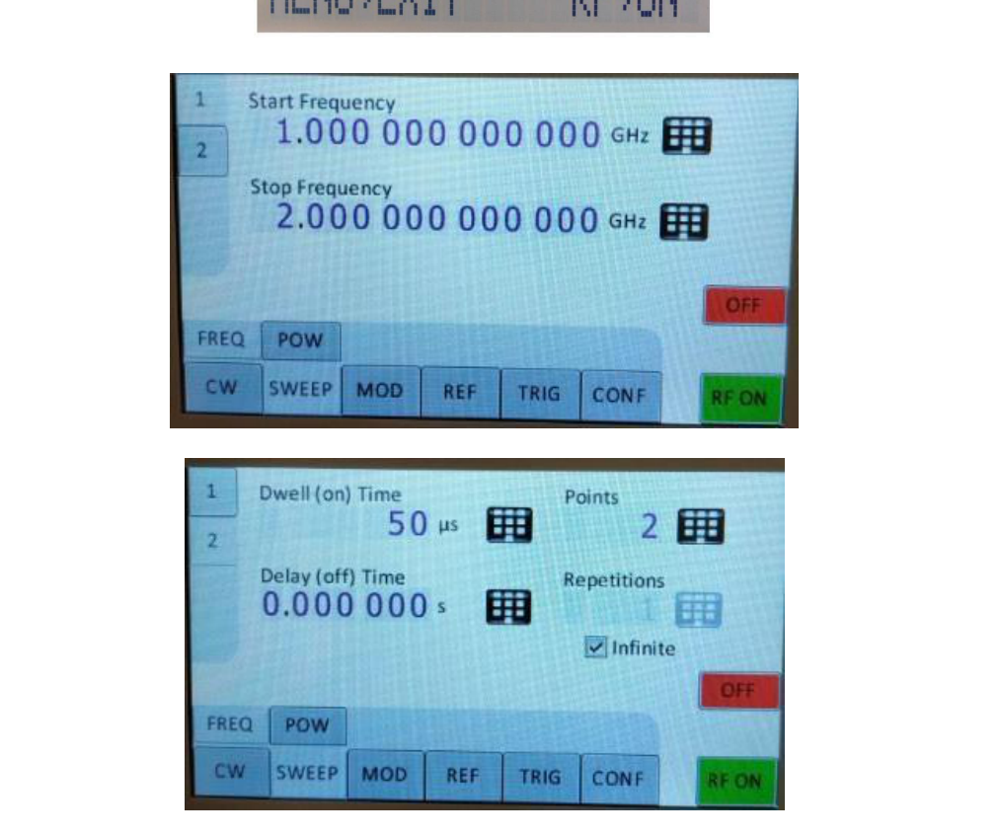
Power Sweep Submenu
After accessing the Power Sweep menu, the first display allows you to enter start and stop power. On the second display, the number of points and the on and off time can be entered. On the third display, select the repetition mode between INFinite and 1 (single repetition). Start the sweep by pressing the RF On/Off button.
List Sweep Submenu
When entering the List Sweep submenu, a list of stored list sweeps is displayed. After accessing the List Sweep submenu, the first display allows you to enter start and stop. Additionally, the number of repetitions of the list can be entered and the ALC can be set on or off. On the second display, a particular list can be selected from the flash memory of the device.
Modulation Submenu
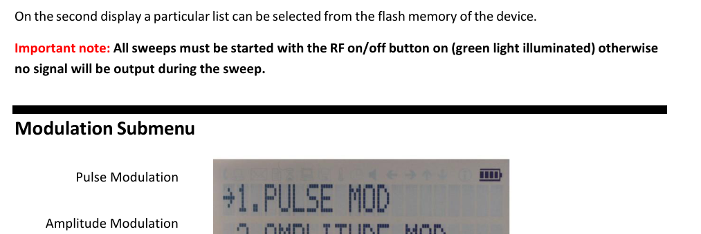
Pulse Modulation Submenu
On line 1 select between INT (internal pulse generator) and EXT (external input). If internal modulation (INT) is selected, go to line 2 to change pulse width to the desired value and go to line 3 to change pulse modulation frequency.
Amplitude Modulation Submenu
In the Amplitude Mod submenu the internal amplitude modulation can be accessed. The modulation rate can be set between 1 Hz and 10 kHz.
Frequency Modulation Submenu
In the frequency modulation submenu the internal and external frequency modulation can be accessed. It is possible to change between internal and external modulation source and to change modulation parameters such as modulation rate, depth or sensitivity.
Phase Modulation Submenu
In the phase modulation submenu the internal and external phase modulation can be accessed. It is possible to change between internal and external modulation source and change modulation parameters.
Reference Submenu
After accessing the Reference menu, use the rotary knob to toggle between ON and OFF or to change the reference frequency to the desired value, respectively.
Trigger Submenu
After accessing the Trigger menu, use the rotary knob to toggle the selected entry value or to change the selected digit. Parameters: Trigger Source, Continuous, Trigger Slope, Retrigger (on/off/immediate), Trigger delay.
- Select SOURce: IMMediate, EXTernal, BUS (SCPI command), KEY (RF on/off button).
- Select SLOPe: POSitive, NEGative.
- Select CONTinuous: ON, OFF (ON means that the trigger is re-armed after each trigger occurrence).
- Select RETRigger: OFF, ON, IMMediate (OFF means that any trigger event during execution of list is ignored).
- Enter DELAY: trigger delay in microseconds.
Press the RF On/Off button to arm the trigger. Exit the menu by pressing the menu key.
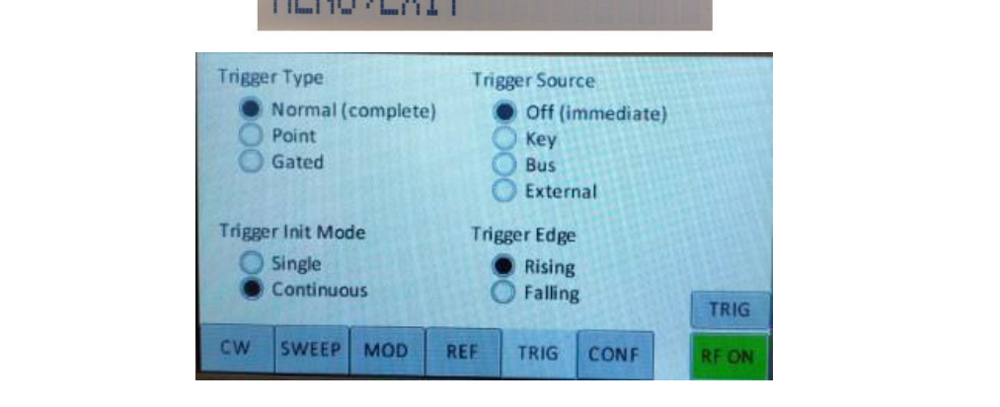
LF Output Submenu
In the LF OUTPUT submenu the FUNC OUT output can be configured at the rear panel of the instrument. On the first screen the source for the FUNC OUT can be selected. Choose LFG for the low frequency generator, TRIG to enable the instrument trigger output and PULM to enable the pulse video output. If LFG is selected, select the waveform between sine, triangle, or square. Then enter the desired output frequency and voltage amplitude.
LAN Configuration Submenu
In the LAN Configuration menu, IP address, subnet mask and DHCP can be configured. Press the RF key to save the configuration (do not if you want to discard your changes).
Display Settings Submenu
After accessing the Display Configuration menu, use the rotary knob to change the display contrast as required. Press the menu key to save and exit the Display Settings submenu.
Save Settings Submenu
After accessing the Save Settings menu, use the rotary knob to get to the memory state you want to save. Press the RF ON/OFF key to save your settings.
Load Settings Submenu
After accessing the Load Settings menu, use the rotary knob to get to the memory state you want to load. Press the RF ON/OFF key to load.
Load Defaults Submenu
Press the RF ON/OFF key button to load.
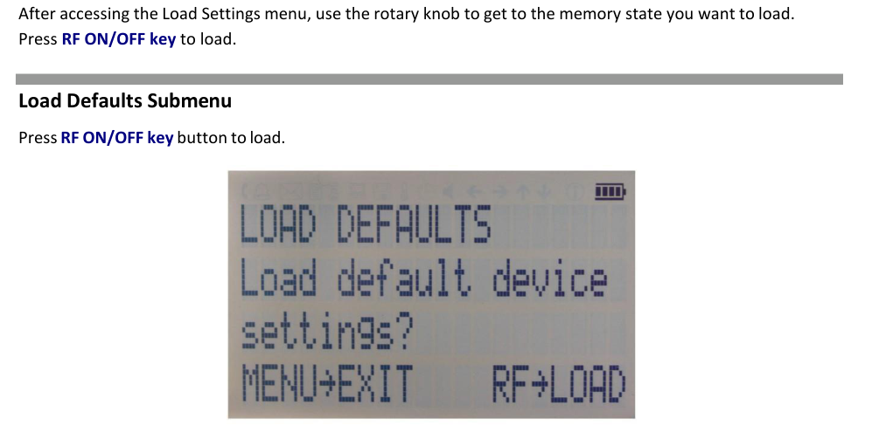
Help Submenu
This submenu provides basic information about the front panel menu control.
11.Remote Programming the Signal Generator
The signal generator can be remotely programmed. Please refer to the Programmer's Manual for details.
12.Battery Operation (B3 Option)
If your instrument is equipped with an internal rechargeable battery (B3 option) it can be operated without the external power supply. A fully charged battery is good for up to three hours of operation at full RF output power. The same external power adaptor (6 V @ 3 A) is used for the battery version as for the standard model for both normal operation and charging of the battery.
There are four operating modes:
- Normal operation — the external power supply is connected to the instrument and the device is turned ON (with the power switch on the rear panel turned ON). In this mode the instrument can be used as if no battery was present. The internal battery is not used and will NOT be charged.
- Charging — the external power supply is connected to the instrument and the device is turned OFF (with the power switch on the rear panel turned OFF). In this mode the instrument is charging the internal battery. Once the battery is fully charged, the instrument goes into standby mode. Time required to complete charging is approx. four hours.
- Standby — the internal battery is fully charged and the instrument is turned OFF.
- Battery operation — the external power supply is disconnected and the device is turned ON. The internal battery supplies the power until it is exhausted.
| External power adaptor | Power Switch ON | Power Switch OFF |
|---|---|---|
| Supplying power | Normal operation (no charging) | Charging → standby when fully charged |
| Disconnected | Battery operation until discharged | Completely powered off |
Table 2. Operating modes of an instrument equipped with an internal battery. Notes: (1) The instrument will switch off automatically when the battery is discharged. It is recommended that the power switch is turned to the OFF position when the battery is fully discharged. (2) Termination of charging is automatic. The unit will then enter standby mode. The power adaptor can be left connected for any length of time.
During operation the approximate remaining battery capacity is indicated by the battery symbol visible in the upper right corner of the display.
Hints for Maximizing the Battery Running Time
- Fully charge the unit before you use it. Toggle the power switch to ON and then OFF again while the instrument is powered by the external power adaptor. This will initiate a new charge cycle.
- Charging time of a completely discharged battery can be up to 6 hours. The battery will only be charged when the instrument power switch is in the OFF position.
- Batteries should always be charged at room temperature. Charging the instrument at very low or elevated temperatures may result in early termination of the charging process, for example the battery is not fully charged. For safety reasons the charging does not start when the internal temperature of the instrument is above 50 °C.
- Check the battery indicator in the upper right corner of the display. It should indicate full charge when running on battery power after charging (4 segments).
- Power consumption of the instrument is reduced when the RF power is switched off, thereby increasing overall battery run time.
- Battery run time is maximal for ambient temperature between 15 and 25 °C. Self-discharge of the battery is much faster at temperatures above 30 °C.
- Avoid storing the instrument in very hot places such as behind the windshield of a car parked in the sun.
Hints for Maximizing Battery Life Expectancy
- The battery will reach its best performance after the first few charge-discharge cycles.
- Always use the external power adaptor supplied with the instrument for normal operation and charging. This will make sure that the charging circuits work as specified.
- Fully charge the instrument after running it from the battery for an extended period of time.
- If an instrument with internal battery will be stored for a long period of time, fully charge it before storage, then remove the power adaptor and make sure that the power switch is in the OFF position. After storage, first charge the unit for 4-6 hours.
To replace the battery at the end of its lifetime, please contact BNC or one of its distributors.
13.Extended Power Range (PE3 Options)
Some instrument models are available with option PE3 that extends the power range towards lower power levels. With option PE3 installed, a mechanical step attenuator module is added. For the guaranteed minimum power level, please consult the respective datasheet.
14.Maintenance and Warranty Information
Adjustments and Calibration
To maintain optimum measurement performance, the instrument should be calibrated every 24 months. It is recommended that the instruments be returned to BNC or to an authorized calibration facility. For more information please contact our Customer Service Department as indicated on www.berkeleynucleonics.com.
Repair
The signal generator contains no user-serviceable parts. Repair or calibration of the signal generator requires specialised test equipment and must be performed by BNC or its authorized repair specialists.
Warranty Information
All BNC instruments are warranted against defects in material and workmanship for a period of two years from the date of shipment. BNC will, at its option, repair or replace products that prove to be defective during the warranty period, provided they are returned to BNC and provided the preventative maintenance procedures are followed. Repairs necessitated by misuse of the product are not covered by this warranty. No other warranties are expressed or implied, including but not limited to implied warranties of merchantability and fitness for a particular purpose. BNC is not liable for consequential damages.
The warranty on the internal rechargeable batteries (option B3) is one year from the date of shipment. Battery replacement is available through BNC and its distributors.
Equipment Returns
For instruments requiring service, either in or out of warranty, contact your local distributor or BNC Customer Service Department at the address given below for pricing and instructions before returning your instrument. When you call, be sure to have the following information available:
- Model number.
- Serial number.
- Full description of the failure condition.
You will get a Return Merchandise Authorization (RMA) number from BNC; please put it on the outside of the package. Instruments that are eligible for in-warranty repair will be returned prepaid to the customer. For all other situations the customer is responsible for all shipping charges. An evaluation fee may be charged for processing units that are found to have no functional or performance defects.
For out of warranty instruments, BNC will provide an estimate for the cost of repair. Customer approval of the charges will be required before repairs can be made. For units deemed to be beyond repair, or in situations where the customer declines to authorize repair, an evaluation charge may be assessed by BNC.
15.Contact
| Company | Berkeley Nucleonics Corporation |
| Phone | (415) 453-9955 |
| Address | 2955 Kerner Blvd, San Rafael, CA 94901 |
| info@berkeleynucleonics.com | |
| Web | berkeleynucleonics.com |
Signal Generator User Manual · Document Version 3.06 · Print Code: 32025040.